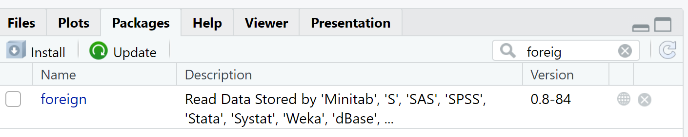

Welcome
Welcome to the course. This is an interactive tutorial that should help you verify that you and your computer are ready to use the materials developed for this course using R and RStudio.1
Learning Objectives
At the end of this tutorial you should be able to:
- Install R on your computer
- Install the RStudio IDE (Integrated Development Environment)
- Install the
tidyverseR package - Run a few lines of R code
You can skip this tutorial if you’ve already done these things and are familiar with R and RStudio environments, but it may be safer to check!
Is this tutorial for you?
Do you need to work through the tutorial? Take the quiz below to find out.
We highly recommend that you follow the order of the items proposed in this tutorial!
Install R
What is R?
R is a statistical programming language and environment for statistical computing and graphics. It is an alternative to the traditional statistical packages such as SPSS, STATA and SAS. It has several benefits including:
- it is open source – license free
- it can be used on 3 all operating systems: MacOS, Linux, UNIX and Windows; and
- it is supported by an extensive community.
If your computer was a plane, we may think of R as the engine and propeller
How to install R
The best way is to follow the instructions in this video (1 min 30s)
Link to install R: https://cran.r-project.org/
Test your knowledge
Install RStudio
What is RStudio?
RStudio is an R-specific Integrated Development Environment (IDE). This means it is a piece of software that was built for R (even though it can support other programming languages software) that combines several tools in one environment to make working with R more productive.
The RStudio IDE comprises several windows including a console, an editor for writing, editing and executing source code along with tools for plotting, viewing history, debugging and managing your workspace.
RStudio is the most common, beginner-friendly software for R users and the main tool that will be used for the practical exercises in this e-learning course.
If your computer was a plane, we may think of RStudio as the cockpit
How to install RStudio
RStudio makes editing, programming and visualizing in R much easier and we highly recommend that you install it and use it.
For that, follow the instructions in this video (50 sec)
Link to install RStudio: https://www.rstudio.com/products/rstudio/download/
Test your knowledge
Install Packages
R has several functions that are loaded and available in the basic installation of the programme. However, there are a range of other convenient functions and codes written by R users that can be used freely during your R session. These functions are distributed as R packages, which are basically a collection of R code, data sets, documentation, and tests that can be easily shared with others.
If your computer was a plane, we may think of the packages as all the components needed to fly (landing gear, gyroscope, lights, GPS, … )
How to install R packages
The best way is to follow the instructions in this video (1 min 32s)
The “tidyverse” package
To use an R package that did not come with the installation of
RStudio, you must first install it, using the command
install.packages().
For example, to install the package tidyverse, type and execute the following line of code in the script editor window. The argument for the R function is the name of the package, which must be enclosed by double quotation marks. The tidyverse package is essential for data manipulation, exploration and visualization
install.packages("tidyverse")This command will install the package tidyverse and store it
in a directory in the R environment referred to as the “library”. The
tidyverse package contains 8 packages namely ggplot2,
dplyr, tidyr, readr, purrr, tibble, stringr, and forcats that are
loaded automatically once with the
install.packages(“tidyverse”) command.
The “foreign” and “haven” Packages
One very commonly used R package is called “foreign”. This package is necessary to read and write data files from other statistical software such as SPSS, Stata, SAS and Minitab into R. It is also needed for reading and writing “dBase” files that carry the .dbf extension.
To search for the “foreign” package, go to the “Files/ Plots/ Packages and Help” pane and select the tab Packages. Type “foreign” in the search bar. You should see a result like the image below. The unchecked box means that the package is available in the library but has not been loaded for the library for use in the current R session. 
Similar to the “foreign” package, R includes a package called “haven” that also support the import and export of data sets in commercial statistical packages such as SPSS, Stata and SAS.
How to access packages after they have been installed
To use R packages during your R session, you must load it from the
library using the library() function. For example, to load
the foreign package, we do the following:
library("foreign")To access the manual for packages that have been loaded in the
library, use the help argument with the function
library( )
library(help="foreign")Alternatively, you can simply use help( ) function and
specify the name of the package:
help("foreign")Note: You need to install R packages only once. However, you must load the relevant packages needed to perform the desired functions in R (using the
library( )function), each time you start any R session.
Test your knowledge
A short tutorial on R
R Assignment Operator:
R uses <- as the assignment operator. This is a
combination of the less than symbol (<) and hyphen (-). Essentially,
the assignment operator tells R to assign values or data to a named
object or variable.
a <- 3 + 4
a## [1] 7In the block of code above, we performed a simple mathematical operation 3 + 4 and stored the sum in a variable called a. Variables are used to store values for later use. The code above allows R to evaluate the expression 3 + 4 (on the right of the assignment operator) and then assign the sum 7, to the variable a (on the left of the assignment operator), for later use.
Notice that the result is not immediately visible in the console. Instead, you can see the name of the variable in the R workspace, under the environment tab. To print out or view the content of the variable a in the console, simply type the name of the variable and run the command. You should now see the value (7) displayed in the console.
Adding comments to your code:
It is a good practice to annotate your code in the R script editor. This includes adding short explanations on what the code or commands that you have written do as well as the meaning of variables or any objects that are created during an R Session. These explanations are written as comments.
In R, comments are preceded by the symbol # (pound or
hash). This helps R distinguish between comments and actual lines or
blocks of code that the R programme must execute.
# Create variable a that stores the sum of 3 and 4
a <- 3 + 4
a## [1] 7Basic R syntax
Let us define some elements to play with:
# Here I define a numerical variable
myage <- 25
# And I can show it
myage## [1] 25Now if I want to make it pretty, I can use the paste()
function. This function is quite useful for presenting results, titles,
etc; as it paste text ( within quotes ” “) and other R objects
(here a number).
paste("My age is", myage)## [1] "My age is 25"R is case sensitive, which means that we have to be careful about how we name our objects and recall them
*What will the following code return?
MyAge <- 45
paste("My age is", myage)Try it by yourself and click on the Run Code blue
button. You can modify the code to change value, rename the objects
myage, *MyAge etc.
myage <- 25
MyAge <- 45
paste("My age is", myage)Objects
In R everything is an object. This means that an element may embed some other “things”
Let’s create objects!
Vectors
Vectors can be create (and conceived) as a concatenation of numbers. We use The c()` function to concatenate objects.
# Let's create a vector
a <- c(1, 2, 3)
# And another one
b <- c(4, 5, 6)
# Assign values to "mystring"
mystring <- c(a, b)
mystring## [1] 1 2 3 4 5 6We have a double concatenation here since c(1,2,3)is
already a concatenate object (a vector here)
But we can also concatenate things that are of different nature!
*What will the following code return?
myobject <- c("A" , 1 )
myobjectData Frames
A data frame is the equivalent of a tabular, where we store data in rows and columns. We will use these structures a lot, and as any object in R, we can access to its different component with different methods
Let’s create data frames and play with them!
# Creating a data frame
mydata <- data.frame(name = c("John", "Sokol", "Chris"),
age = c(25, 30, 28),
student = c(TRUE, FALSE, FALSE))We have lots of tools to play with data frames
# Here we have the first lines of this very small data frame
head(mydata)The structure of the data frame is given by
str() function. It is very important to identify which
variable is numerical or integer, or a character (string) or a Boolean
(TRUE/FALSE) as some operations will only apply for some type
of variables.
str(mydata)## 'data.frame': 3 obs. of 3 variables:
## $ name : chr "John" "Sokol" "Chris"
## $ age : num 25 30 28
## $ student: logi TRUE FALSE FALSEIn this example, we have 3 objects embedded in the data frame
mydata which are: name (character),
age (numeric) and student (logical). Each
element can be accessed directly by adding the $ sign to the data frame.
For example, the full list of names can be accessed using:
mydata$name## [1] "John" "Sokol" "Chris"But, we can also extract information directly from the data frame using its rows and columns.
*What will the following code return?
mydata[1,]Check it out by yourself
# run this code to find out!
mydata[1,]We can also have quick statistics using the summary()
function. As you see in the output, the summary() function
adapts the result to the type of variable, whether it
is a character (no summary for name), a numeric variable
(age), or a Boolean or logical variable (student takes
TRUE or FALSE values).
This is an important feature of R functions and highlights the importance having the right type for the variables used in our analysis.
# A summary
summary(mydata)## name age student
## Length:3 Min. :25.00 Mode :logical
## Class :character 1st Qu.:26.50 FALSE:2
## Mode :character Median :28.00 TRUE :1
## Mean :27.67
## 3rd Qu.:29.00
## Max. :30.00A new data.frame
Consider the data.frame
mynewdata
mynewdata <- data.frame(
name = c("Aldovia", "Borovia", "Corundia", "Dagbon", "Elbonia"),
area = c(10000, 20000, 15000, 18000, 22000),
flag_color = c("Red", "Blue", "Green", "Yellow", "Purple"),
english = c(TRUE, FALSE, FALSE, FALSE, TRUE)
)Play with mynewdata (recommended) and
then extract the third element of the
first row
# Enter your solution below# maybe you could use the head function first
head(mynewdata)# Now that you have seen the data, you have to extract elements and fill the blanks here:
mynewdata[ , ]# Solution : 1 for the row and 3 for column in that order
mynewdata[1,3]We’ll see later on that there are many other ways to play with
data.frames
Importing data into R
Before we can begin any analysis, we need to first read or import
that data set into R.
R allows the import of data of various types, from data stored in
commonly used formats such as comma-separated values (CSV) or MS Excel
(xls) to those stored in commercial statistical packages such as SPSS,
STATA or SAS.
In this tutorial, we will explore how to import a data set in STATA file
format, which carries the file extension .dta.
To read a STATA data file into R, we use the command
read.dta( ) function. To use this function, we need to load
the “haven” package presented earlier. This package has the
relevant tools and functions to import data from commercial
software.
The function read.dta( ) accepts only one argument,
which is the full name or file path, including the file extension as
shown below.
# loading the haven package
library(haven)
# loading the data
mytest <- read.dta("testdata.dta")The lines of code above first load the package haven using
the library() function. The second line, creates a data
frame called mytest that stores the data from the data file
called “testdata.dta”. Remember that a data frame is a data
structure in R that stores spread-sheet like data, as rows (observations
or cases) and columns (variables).
Data exploration
Data sets operations
We will use a pre-loaded data set with some SDGs. The name of the
data frame is simply SDG
The dataset
Before playing with some functions, let’s have a look at the
variables available in the SDG data set using some base R
commands.
First, let us see what are the variables using the
names() function.
names(SDG)Now, can you display the first 5 lines of the data set (maybe using
using the head() function) ?
Note: by default, head() shows the
6 first rows! Try maybe with an option (type a
comma, inside the function, after the name of the data frame to see some
options)
head(SDG, n=5)That was easy, right?
Playing with tidyverse
There are many functions available in this meta package
tidyverse, in particular, one has many tools for filtering
and visualizing the data.
First, let’s examine the pipe operator that links
operations: %>%.
Imagine we are only interested in the first 3 variables and want to count the number of countries that are in the “Asia” region.
# I create a new data frame with only the first 3 variables (note the use of " : " )
df <- SDG[, 1:3]
#Now I want to subset that data to keep only the "Asia" region (note the use of " subset() " )
df <- subset(df, region_name == "Asia" & population >= 50)
# Counting the number of rows (note the use of " nrow()" )
nrow(df)## [1] 12This requires quite a few lines of code…
But there is a quicker and more readable solution
Then %>% links operations in a very easy-to-read
sequence. The code below does exactly the same operation as before, but
using operation linking using %>%
SDG %>%
subset(region_name == "Asia" & population >= 50) %>%
nrow()This operator %>% (or pipe) will forward a
value, or the result of an expression, into the next function
call/expression.
One may read
%>%as next do this (please) !
An alternative to subset() is the function
filter() that lets you use a logical test to extract
specific rows from a data frame. filter() will return every
row that passes each logical test.
Test Your Knowledge
We can use many different operations to filter data, such as:
- == (identical), > (strictly greater), >= (greater or
equal)
- & (and) , | (or) , ! (not)
*What will the following code return?
SDG %>%
filter(region_name == 'Asia' | region_name == "Africa",
internet_use > 60 ) Common mistakes
In R, the order of operations doesn’t work like English. You
can’t write
filter(SDG, region_name == "Asia" | "Africa" ), even though
you want all countries that are either in Asia or Africa.
Here are four more tips to help you use logical tests and Boolean operators in R:
- A useful short-hand for this problem is
x %in% y. This will select every row wherexis one of the values iny. We could use it to rewrite the code in the question above:
SDG %>%
filter(region_name %in% c("Asia", "Africa") , internet_use > 60 ) One may also use some advanced functions such as
str_starts (string starts with), but in our case,
the output will include “Americas”
SDG %>%
filter(str_starts(region_name, 'A') , internet_use > 50 ) Exercise
Use the code chunks below to count the number of countries that:
Have a maternal mortality rate lower than 12%
SDG %>%
filter(maternal_mortality_ratio <= 12)Is there a problem in the result ?
Find out wich are the countries with a negative values for maternal mortality rate
# To ease the reading, we use select() to restrict to variables of interest
SDG %>%
filter(maternal_mortality_ratio < 0 ) %>%
select(country, maternal_mortality_ratio)Find the number of countries in Asia with a maternal mortality rate lower than 30%?
# Here there is a problem since we have duplicates. One may use distinct()
SDG %>%
filter(maternal_mortality_ratio <30 , region_name =="Asia" ) %>%
select(country, population, maternal_mortality_ratio) # Solution: We use distinct() in the end to remove duplicates
SDG %>%
filter(maternal_mortality_ratio <30 , region_name =="Asia" ) %>%
select(country, population, maternal_mortality_ratio) %>%
distinct() Yes, there is a duplicate problem! Can you solve it?
(see the hints to find out).
There are a lot of other things to learn, please read the Tidyverse reference manual and enjoy other tutorials like this one or that one and search on the web by yourself, there are hundreds of examples. Enjoy!
References:
Richard, Cotton (2013). Learning R. Sebastopol, California: O’Reilly Media.
RStudio IDE. (2021). RStudio. Retrieved October 4, 2021, from https://www.rstudio.com/products/rstudio/download/
Posit Primers developed by RStudio (now Posit) are also useful references https://posit.cloud/learn/primers
This tutorial, created by Christophe Bontemps (SIAP) , is
licensed under
CC
BY-NC-SA
4.0